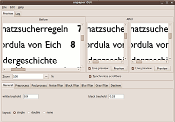

unpaper-GUI
Archivierte Anleitung
Dieser Artikel wurde archiviert, da er - oder Teile daraus - nur noch unter einer älteren Ubuntu-Version nutzbar ist. Diese Anleitung wird vom Wiki-Team weder auf Richtigkeit überprüft noch anderweitig gepflegt. Zusätzlich wurde der Artikel für weitere Änderungen gesperrt.
Anmerkung: Läuft nicht mehr; Fehler bei der Konvertierung der Dateien
Zum Verständnis dieses Artikels sind folgende Seiten hilfreich:
Für die Verwendung von unpaper existiert das Programm unpaper-GUI  , dass eine einfache grafische Oberfläche für unpaper zur Verfügung stellt. Unpaper-GUI wurde 2008 von einem polnischen Studenten unter Ubuntu Hardy Heron 8.04 entwickelt. Zwar sind längst nicht alle Optionen integriert, aber es lässt sich schnell überblicken, welche Auswirkungen bestimmte Optionen auf das Resultat haben. Das Programm eignet sich daher besonders als Vorbereitung zur Erstellung der korrekten Optionen für unpaper selbst, weil zudem auch keine Stapel-Verarbeitung möglich ist. Das Programm wird derzeit leider nicht weiterentwickelt, auch ist leider keine Dokumentation vorhanden. Einige wenige Hinweise können der README-Datei im Archiv entnommen werden.
, dass eine einfache grafische Oberfläche für unpaper zur Verfügung stellt. Unpaper-GUI wurde 2008 von einem polnischen Studenten unter Ubuntu Hardy Heron 8.04 entwickelt. Zwar sind längst nicht alle Optionen integriert, aber es lässt sich schnell überblicken, welche Auswirkungen bestimmte Optionen auf das Resultat haben. Das Programm eignet sich daher besonders als Vorbereitung zur Erstellung der korrekten Optionen für unpaper selbst, weil zudem auch keine Stapel-Verarbeitung möglich ist. Das Programm wird derzeit leider nicht weiterentwickelt, auch ist leider keine Dokumentation vorhanden. Einige wenige Hinweise können der README-Datei im Archiv entnommen werden.
Installation¶
Folgende Paket müssen für die Nutzung installiert[1] sein:
unpaper
imagemagick
wx2.8-headers
libwxgtk2.8-0
libwxgtk2.8-dev
libwxbase2.8-0
g++
 mit apturl
mit apturl
Paketliste zum Kopieren:
sudo apt-get install unpaper imagemagick wx2.8-headers libwxgtk2.8-0 libwxgtk2.8-dev libwxbase2.8-0 g++
sudo aptitude install unpaper imagemagick wx2.8-headers libwxgtk2.8-0 libwxgtk2.8-dev libwxbase2.8-0 g++
Der Quellcode kann hier als tar.gz-Archiv  heruntergeladen werden.
heruntergeladen werden.
Hinweis!
Fremdsoftware kann das System gefährden.
Das Archiv entpacken[2] und dann im Downloadverzeichnis im Terminal[3] den Befehl "make" ausführen. Dabei entsteht das Programm unpap, welches dann aufgerufen werden kann[3] (es existiert keine Installationsroutine, auch lässt sich nicht ohne weiteres ein Paket erstellen). Das Programm wird im Terminal[4] im Erstellverzeichnis mit dem Befehl "./unpap" gestartet[5], komfortabler ist es sich z.B. im Hauptmenü einen Starter anzulegen[6].

Benutzung¶
Mit Aufruf von "./unpap" öffnet sich ein Bearbeitungsfenster mit drei Vorschaubereichen. Die zu bearbeite Vorlage wird über "File -> Open" oder
Strg +
O importiert; unpaper-GUI verarbeitet die von unpaper unterstützten Formate .pgm, .ppm und .pbm, also alle .pnm-Dateien. Allerdings können durch die Verwendung von ImageMagick/convert fast alle gängigen Bild-Formate direkt verwendet werden. Bei Import-Fehlern wird ein entsprechende Meldung ausgegeben. Die Ausgabe erfolgt im .pnm-Format
Links wird die Vorlage angezeigt ("Before"), die beiden weiteren Fenster ("After") zeigen das Bearbeitungsergebnis, wenn gewünscht in "Echtzeit". Über die beiden Ausgabefenster kann man Unterschiede zwischen der Verwendung verschiedener Optionen anzeigen lassen. Mit den "Preview"-Schaltflächen der "After"-Fenster lassen sich Unterschiede zwischen verschiedenen Optionen direkt sichtbar machen. Dazu werden zunächst die Optionen gewählt, und dann die Vorschau für eines der Fenster aktiviert. Nach Veränderung der Optionen können dann über Aktivierung der Vorschau des zweiten Fensters diese Veränderungen angezeigt werden (manche Optionsanpassungen erzeugen allerdings nur sehr schwer erkennbare Änderungen). Wenn "Live preview" aktiviert ist, wird jede Änderung in den Reitern unten sofort berechnet; das kann allerdings etwas länger dauern, und sollte, wenn man mehrere Werte verändern möchte, ggf. nicht aktiviert werden. Auch führt die Aktivierung für beide Fenster zwangsläufig zu identischen Ausgaben, weil dann beide Vorschauen mit den selben Einstellungen dargestellt werden.
Im Fenster "Zoom" lässt sich die Ansichtsgröße der Vorlagen/Ergebnisse bestimmen, Aktivierung der Checkbox "Synchronize scrollbars" dient dazu, in allen drei Vorschauen bei Bedienung der Schieber an den Seiten (nicht bei Verwendung der Maus!) den gleichen Ausschnitt anzuzeigen.
Im Reiter "Log" lässt sich verfolgen, welche Schritte durchgeführt worden sind. Da das Programm keine Stapelverarbeitung beherrscht, wird die eigentliche Verarbeitung großer Datenmengen sinnvollerweise direkt über das Kommandozeilen-Werkzeug "unpaper" erfolgen. Mit der grafischen Oberfläche lassen sich aber die Optionen festlegen, und auch exportieren (Reiter "File ->Save unpaper settings..."). Über "Load unpaper setting..." lassen sich so abgespeicherte Optionen auch wieder importieren und ggf. weiterbearbeiten.
Optionenauswahl¶
Unter den Fenstern befinden sich die Reiter zur Optionenauswahl, die bestimmtem Optionen von unpaper spezifische Werte zuordnen:
| unpaper-GUI-Reiter | ||||
| Reiter | Eintrag | unpaper-Option | mögliche Werte | Funktion |
| General | "black treshold" | --black-threshold | 0.0 - 1 | Legt den Wert fest, unterhalb dessen ein Pixel als Schwarz angesehen wird (Standard 0.33) |
| "white treshold" | --white-treshold | 0.0 - 1 | Legt den Wert fest, ab dem eine Pixel als "weiß" angesehen wird (Standard 0.9) | |
| Checkbox "layout" | --layout | single, double, none | eine Seite; zwei Seiten (dann Querformat, Teilung der Vorlage); kein Layout (Scanpunkte können individuell festgelegt werden) | |
| Preprocess | "rotate" | --pre-rotate | 90, -90 | Drehung vor weiteren Aktionen um 90° im oder gegen den Uhrzeigersinn |
| "shift" | --pre-shift | positiv oder negativ | Verschiebt vor weiteren Aktionen um angegebenen Pixelzahl | |
| "mirror" horizontal/vertical | --pre-mirror | v, h | Spiegelt vor anderen Aktionen senkrecht/waagerecht | |
| "size" | --size | legal | letter | a3 | a4 | a5 | Verändert die Größe vor weiteren Aktionen, sonst auch als Werte angebbar | |
| Checkbox "landscape" | --size<size-name>-landscape | Querformat, Standard ist Hochformat | ||
| Postprocess | "mirror" | --post-mirror | v, h | spiegelt am Ende waagerecht/senkrecht |
| "rotate" | --post-rotate | 90, -90 | Drehung am Ende um 90° im oder gegen den Uhrzeigersinn | |
| "shift" | --post-shift | positiv oder negativ | Verschiebt am Ende um angegebenen Pixelzahl | |
| "size" | --post-size | legal | letter | a3 | a4 | a5 | Verändert die Große am Ende, sonst auch als Werte angebbar | |
| Checkbox "landscape" | --size-<size-name>-landscape | Querformat, Standard ist Hochformat | ||
| Noise Filter | Checkbox "disable" | --no-noisefilter | keine Entfernung von vereinzelten dunklen "herrenlosen" Pixeln, sonst für Seiten festlegbar | |
| Checkbox "manual" | "intensity" | --noisefilter-intensity | n (Ganzzahl) | Ansammlungen von </= n dunkler Pixeln werden entfernt (Standard 4) |
| Black Filter | Checkbox "disable" | --no-blackfilter | keine Entfernung von schwarzen Flächen, sonst für einzelne Seiten festlegbar | |
| Checkbox "manual" | "intensity" | --blackfilter-intensity | 0 - 255 ? | Intensität, mit der schwarze Flächen entfernt werden; größere Werte entfernen mehr "Noise"-Pixel, könnten aber Inhalte löschen (Standard 20) |
| "scan depth", horizontal, vertical | --blackfilter-scan-depth | in Pixeln | Größe des "virtuellen Riegels" um schwarze Flächen zu finden, (Standard 500,500) | |
| "scan direction" horizontal, vertical | --blackfilter-scan-direction | v,h | Richtung, in der nach durchgängig schwarzen Bereichen gesucht wird (Standard v,h) | |
| "scan size", horizontal, vertical | --blackfilter-scan-size | in Pixeln | Weite des "virtuellen Riegels" zur Masken-Erkennung, (Standard 20,20) | |
| "scan step", horizontal, vertical | --blackfilter-scan-step | in Pixeln | Schrittweite, mit der der "virtuelle Riegel" bewegt wird (Standard 5,5) | |
| "scan treshold" | --blackfilter-scan-threshold | 0.0 - 1 | Legt den Wert fest, oberhalb dessen ein Bereich als Schwarz angesehen wird; (Standard 0.95) | |
| Blur Filter | Checkbox "disable" | --no-blurfilter | keine Entfernung von "Stör-Pixel-Ansammlungen", sonst für bestimmte Seiten angebbar | |
| Checkbox "manual" | "intensity" | --blurfilter-intensity | 0.0 - 1 | Relativer Intensitäts-Wert für Stör-Pixel-Entfernung; alle Bereiche die höchsten dieser Wert an dunklen Pixeln aufweisen, werden gesäubert (Standard 0.01) |
| "size" horizontal, vertical | --blurfilter-size | in Pixeln | Größe des Bereichs, ab dem nach kleinen Ansammlungen von Pixeln gesucht wird (Standard 100,100) | |
| "step", horizontal, vertical | --blurfilter-step | in Pixeln | Schrittweite, mit der nach "blur"-Pixeln gesucht wird (Standard 50,50) | |
| Gray Filter | Checkbox "disable" | - no-grayfilter | keine Verwendung, kann sonst individuell für Seiten festgelegt werden | |
| Checkbox "manual" | "size" horizontal, vertical | --grayfilter-size | in Pixeln | Größe des Bereichs, ab dem nach reinem Grau gesucht wird, (Standard 50,50) |
| "step", horizontal, vertical | --grayfilter-step | in Pixeln | Schrittweite, mit der die Graufilter-Maske bewegt wird (Standard 20,20) | |
| "treshold" | --grayfilter-treshold | 0.0 - 1 | Realtive Intensität des zu entfernenden grauen Bereichs, wenn kein schwarzer Pixel gefunden wird (Standard 0.5) | |
| Deskew | Checkbox "disable" | --no-deskew | kein Geradeziehen, sonst für bestimmte Seiten angebbar | |
| Checkbox "manual" | "scan size" | --deskew-scan-size | in Pixeln | Länge der virtuellen Linie um ein Drehung zu erkennen |
| "scan range" | --deskew-scan-range | in Grad | Abweichung, in der nach Drehung gesucht wird (von - Grad bis + Grad); (Standard 5.0) | |
| "scan direction" | --deskew-scan-direction | left, top, rigt, bottom | Kante, von der aus nach Drehung gesucht werden soll; bei mehreren Kanten wird der Durchschnitt verwendet (Standard left,right) | |
| "scan step" | --deskew-scan-step | in Grad | Schrittweite mit der nach Drehung gesucht wird; kleine Werte führen zu besseren Ergebnissen, aber längeren Berechnungszeiten (Standard 0.1) | |
| "scan depth" | --deskew-scan-depth | 0.0 - 1 | Anzahl dunkler Pixel, die sich - relativ zur Größe des "Scan-Riegels", ansammeln müssen (Standard 0.5) | |
| "scan deviation" | --deskew-scan-deviation | maximale statistische Abweichung zwischen den Werten der erkannten Rändern, falls der Wert überschritten wird, erfolgt keine Drehung (Standard 1.0) | ||
Nach Fertigstellung kann dann das Ergebnis unter "File -> Save" oder Strg + S abgespeichert werden; eine Stapelverarbeitung mehrerer Seiten ist allerdings nicht möglich.
Es werden längst nicht alle Funktionen von unpaper abgedeckt (siehe dazu auch die über "File -> save unpaper settings..." erzeugbare Export-Datei, in der eine Vielzahl weiterer Optionen aufgelistet werden). Zudem werden einigen Funktionen zunächst nicht umgesetzt (so haben z.B. die Einstellungen zu "Preprocess" und "Postprocess" in dem Programm anscheinend keine Auswirkungen auf die Ausgabe). Die verwendeten Optionen lassen sich aber im "Log"-Fenster für jede durchgeführt Aktion, auch die Abspeicherung des Ergebnisses, ansehen, und können dort kopiert (auch über "Edit -> copy unpaper args to clipboard" oder Strg + C in die Zwischenablage) und dann mit unpaper auf der Kommandozeile verwendet werden.
Alternativen¶
Komfortabler ist die Verwendung von Scan Tailor, das wesentlich ausgereifter ist, und mit dem auch eine Stapel-Verarbeitung von Vorlagen möglich ist.
- Erstellt mit Inyoka
-
 2004 – 2017 ubuntuusers.de • Einige Rechte vorbehalten
2004 – 2017 ubuntuusers.de • Einige Rechte vorbehalten
Lizenz • Kontakt • Datenschutz • Impressum • Serverstatus -
Serverhousing gespendet von